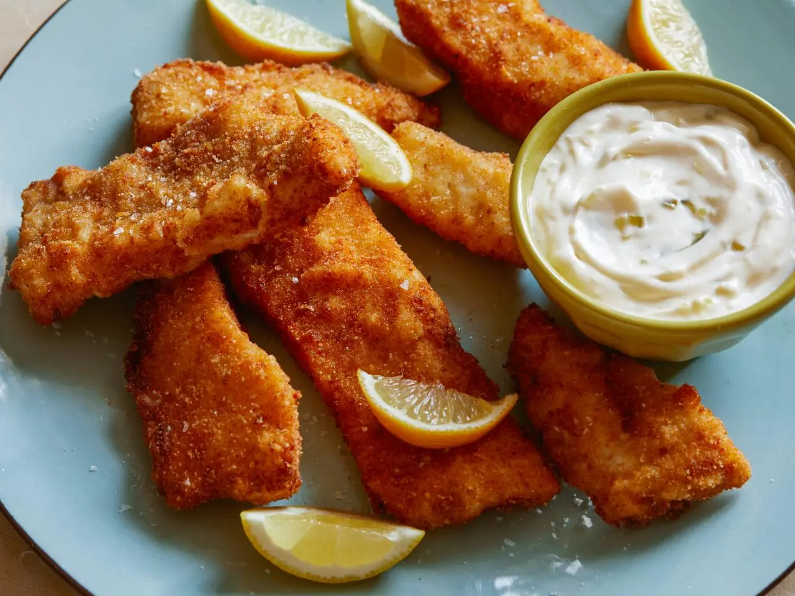

Ingredients :
- Vegetable oil, for frying
- 1 1/2 to 2 pounds fresh cod
- Salt and pepper
- 1 /2 cup all-purpose unbleached flour
- 2 large eggs
- 2 tablespoons cold water, a splash
- 2 cups plain bread crumbs
- 1/2 teaspoon dried mustard powder
- 1/4 teaspoon cayenne pepper, a few pinches
- Wedged lemons and malt vinegar for topping
Directions :
Special equipment : 3 disposable pie tins
- Pour 2-inches of vegetable oil into a large skillet. Place skillet over
large burner and heat oil over medium high heat. To check if the oil
is hot enough, drop in 1-inch cube of white bread. The bread should
brown in a 40 count.
- Cut cod into 4 servings, 6 to 8-ounce portions and season with salt
and pepper. Place a couple of scoops of flour in a pie tin. Combine
egg and water in second tin. Season plain bread crumbs and mustard
and cayenne in the third tin. Coat fish in flour, then egg, and then
bread crumbs. Gently set coated fish into hot oil and fry 5 minutes
on each side until medium golden brown in color.
- When the fish is evenly golden all over, remove and drain on brown
paper sacks.
- Suggested : 3 disposable pie tins .